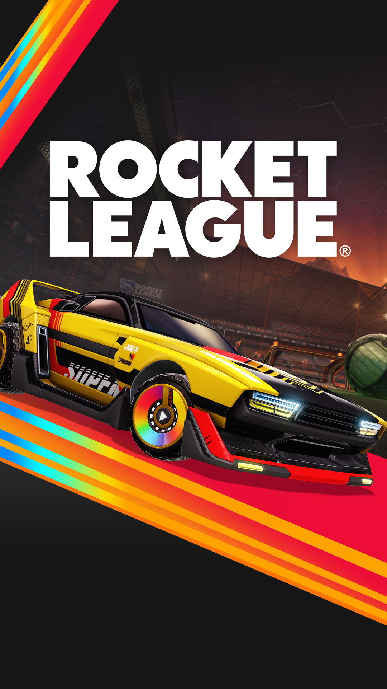

According to a new post from reliable Twitter user ~@SamLeakss, Rocket League is planning a major crossover with Avatar The Last Airbender.
The post only says that the collaboration is “happening soon”. There are no further details on the potential content or release window, at this time.
It will surely involve themed vehicles, but a game mode could also be in store. Rocket League has tweaked certain modes before to align with some previous collaborations.
The most recent Rocket League crossover featured the Mandalorian Mayhem event. This featured various Mandalorian-themed items, as well as the G-Force Frenzy LTM.
The 90s and early 2000s, a time that was bold, radical, and most importantly: destined to return in Rocket League Season 13! Get ready for reminiscent nights at Mannfield—Season 13 kicks off December 6.
Here’s the 4-1-1 on this Season’s Rocket Pass Premium. Upon purchase, you’ll auto-unlock the Ace Car Body. Go up the Tiers to unlock other new items like the RC Antenna, CRT Wheels, Primo Car Body, yadda yadda yadda… (That’s right, Season 13’s Rocket Pass Premium has two different Car Bodies!)
NOTE: Ace uses the Breakout hitbox, and Primo uses the Hybrid hitbox. The hitboxes for both Car Bodies have been shifted back and lowered for a better visual fit.

LOOK FRESH AT THE FARM
They say the grass was greener at the turn of the century, and maybe there’s something to that. The Farmstead and Wasteland Arenas have grown grass for Season 13, and perfect for some nighttime nostalgia, it’s dusk over at Mannfield!

ROCKET PASS PREMIUM
Can’t go without your pager? Not enough neon in your life? Check out some of the rad items in this Season’s Rocket Pass Premium you can unlock by going up the Tiers:

Keep the information superhighway spinning with the Cyberspace Goal Explosion and create a retrowave with the takeover Pointbreak Goal Explosion. Whatever Goal Explosion you use, leave no diggity your team just scored.
In the heat of a match, you can’t demo a play before you make it—but you can remember the days of trying the demo disc of your next favorite video game. Sound the Demo Disc 20XX Player Anthem and relive the feel of playing a demo on your sixth-gen console or PC!
Speaking of music and discs, you wouldn’t want your mixtape CDs to get shuffled around in the car. So put them in a case with the Travel Case Topper! Keep your alt rock locked down.
All the rewards mentioned above are just some of the rewards you can unlock. This Season’s Rocket Pass is all that and a bag of chips, with 70+ Tiers of rewards across free and Premium. Make your Boost da (Neon) Bomb.
KEEP IT TIGHT TO EARN TOURNEY REWARDS
Remember goin’ to a restaurant for your birthday and getting a cool hat? Then stopping at the bubblegum machine on the way out? This Season’s tournament rewards let you relive those childhood (or adult) memories. Shiver timbers with the Sailor Hat Topper and pop off with the Bubble Gum Explosion. Also take the Orbital Octane Decal for a spin!

There are even more tournament rewards, so keep proving you’re better than aiight.
NEW: CROSS-GAME ITEMS AND TRADE-IN SYSTEM UPDATES
Cross-game ownership has arrived in Rocket League! Any item with the Cross-Game attribute will also appear in your Fortnite Locker if you play Fortnite using the same Epic Games account.
The first Car Bodies to get the Cross-Game treatment are Octane, Jäger 619, Cyclone, and the Lamborghini Huracán STO, along with select Decals for each, and the OEM Wheels. The Cross-Game attribute will be added to more items over time, so stay tuned!
Cross-Game items are also part of Rocket League’s Trade-In system, so you can trade in eligible Cross-Game items for one item of a higher rarity. Cross-Game items will have some additional trade-in rules—for example, only duplicates of Cross-Game items will appear in the Trade-In Menu until just one instance of the duplicate remains in your inventory.
The full list of Cross-Game trade-in rules will be included in the Season 13 patch notes, and these added rules will not apply to non-Cross-Game items.
OH SNAP! PLAY MENU CHANGES AND SEASON 14 COMPETITIVE REWARDS
The Play Menu's about to be as hard-edged as the era. As announced previously, the menu's getting a facelift in Season 13, featuring a squared-off design where each submenu will have a streamlined layout.
The new Competitive card lets you queue for six Competitive Playlists at once, while the Casual card has all-new Arcade Playlists and a Big Party Playlist. You can learn more about these and a ton of other Play Menu changes in our preview blog post.

Screenshot in English. Not final version - for illustration only.
Also, if you’ve been sweating it out in Ranked, Season 12 Competitive Rewards are in tow too. We’re dropping Goal Explosions for all eligible players, along with in-game Titles for Grand Champion and SSL players!
That’s what’s crackalackin'—Rocket League Season 13 runs from December 6 to March 5!